He trobat diferents articles cientifics que estudien el meu tema i els trobareu a continuació en format APA7. APA7 es una forma d'escriure un article científic
En la figura 4 podem veure que no hi ha diferencies estadisticament notables entre els nivells de Vitamina C d'un tomàquet cultivat convencionalment o un cultiu ecològic. Observem que els resultats son molt variables entre 1,5g de Vitamina C i 3g de Vitamina C respecte a 1kg de tomàquet sec.
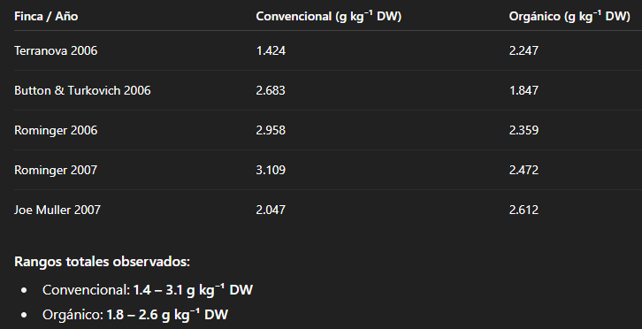
En aquesta captura observem que ChatGPT ens descriu els mateixos nivells de Vitamina C que en el artcile cientific en els tomàquets cultivats convencionalment o ecologicament. Observem que els resultats de ChatGPT son molt variables entre 1,4g de Vitamina C i 3,1g de Vitamina C respecte a 1kg de tomàquet sec, cosa que son resultats molt similars als de l'article cièntific, però no en tots els casos pot ser similar.
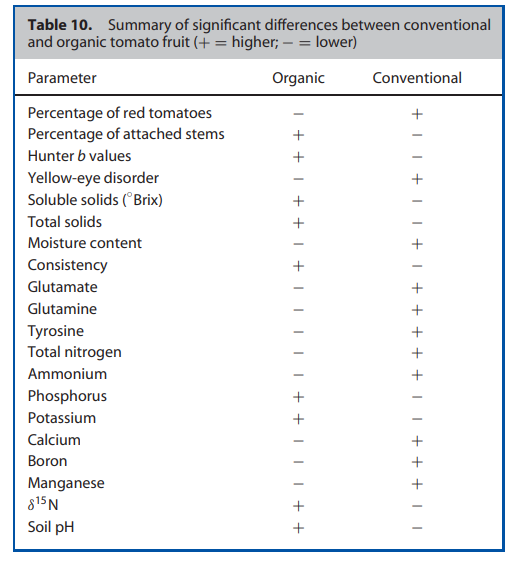
En la taula 10 podem observar que ens indiquen parametres i amb un + o - es determina quin tipus de tomaquet té més o menys. Per exemple el Potassi: el tomàquet ecologic té més quantitat de potassi que el convencional.
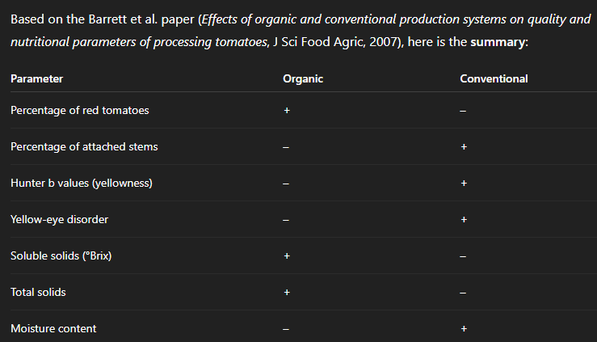
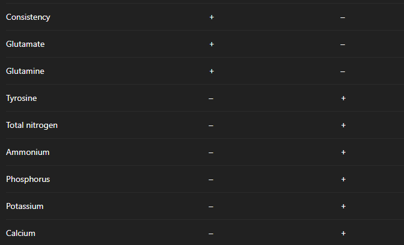
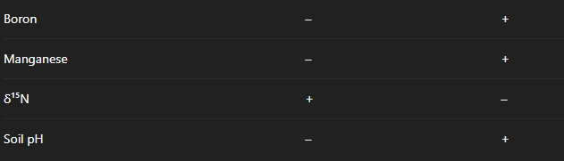
En la taula compartida per ChatGPT podem observar que s'equivoca en diversos parmetres posant + en comptes de - o a l'inreves. Com per exemple el Potassi: en la taula 10 podem veure que l'ecologic té mes quantitat de potassi que el convencional però, a la taula compartida per ChatGPT ens diu totalment el contrari, cosa que ens indica que el resultat esta malament.
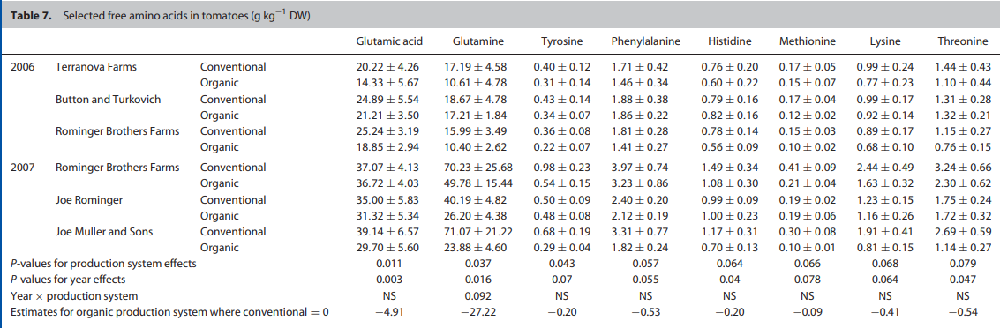
La taula mostra els continguts de aminoàcids lliures en tomàquets de processament cultivats en sistemes orgànics i convencionals en diferents finques i anys. Es veu que alguns aminoàcids, com glutàmic, glutamina i tirosina, poden ser més alts en un sistema que en l’altre, però la variació depèn molt de la finca i de l’any, així que no sempre hi ha un patró clar. Això indica que factors com la varietat, el sòl, la fertilització i les condicions climàtiques tenen un gran impacte en els aminoàcids
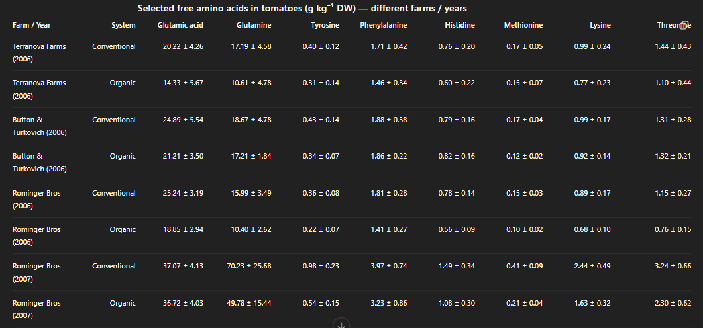 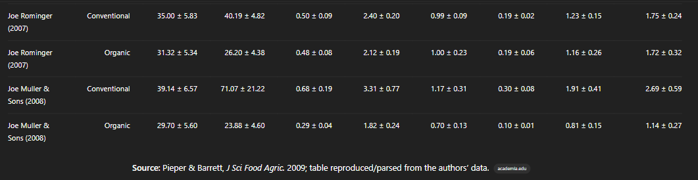
Els valors que mostra la taula són els mateixos que jo havia trobat en l’estudi de Pieper & Barrett (2009). ChatGPT va cercar i localitzar l’estudi i els mateixos valors, només els ha recopilat, això no sempre passa.
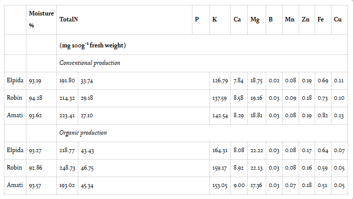
En aquesta taula podem observar el contingut de minerals en mg · 100 g⁻¹ pes fresc de tomàquets cultivats ecologicament i convencionalment.
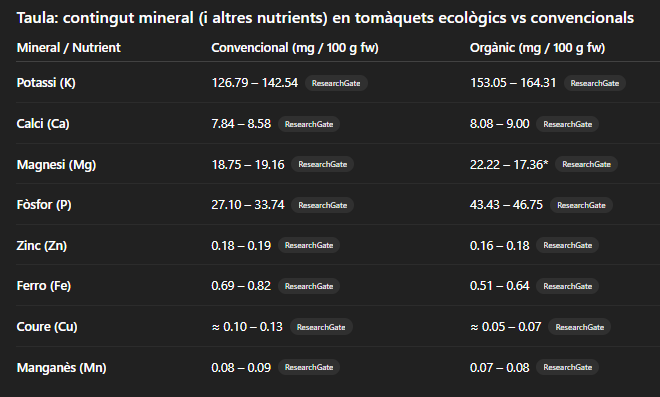
Com podem veure en la taula que ha generat ChatGPT ens descriu nivells de minerals en mg · 100 g⁻¹ pes fresc dels tomàquets convencionals i ecologics molt similars als de l'artcile cientific. Pero no en tots els casos pot ser similar.
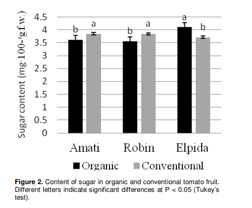
En la taula 2 observem els nivells de sucre en mg · 100 g⁻¹ pes fresc en els tomàquets cultivats convencionament i ecologicament en 3 diferents granjes.
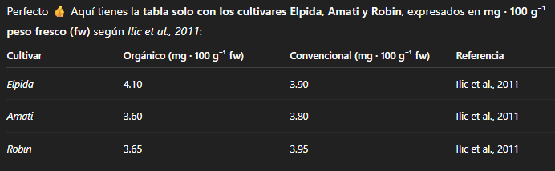
En la taula generada per ChatGPT podem observar que els nivells de sucre en mg · 100 g⁻¹ pes fresc en els tomàquets cultivats de manera convencional i ecologica són iguals que els de l'article cientific. Però no en tots els casos pot presentar-se una similitud com aquesta.
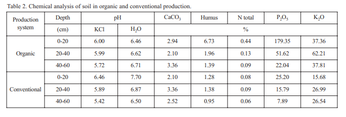
Com podem veure en la taula anterior El sòl orgànic és més ric en humus i nitrogen a la part superficial, cosa que ajuda que els tomàquets creixin millor. A mesura que baixem de profunditat, els nutrients disminueixen. L’acidesa (pH) i el CaCO₃ són similars entre sistemes. P i K també es concentren més a la part superior, especialment en el sòl orgànic.
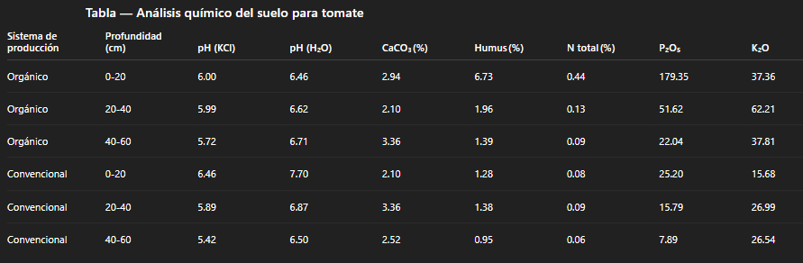
La taula compartida per ChatGPT utilitza les mateixes dades ja que ha acabat trobant l'article a la seva base de dades, això no passa en tots els casos.
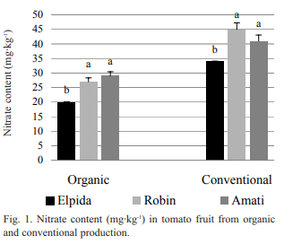
La taula mostra el contingut de nitrats (NO₃⁻) en mg·kg⁻¹ dels tomàquets de les varietats Robin‑F1, Amati‑F1 i Elpida‑F1, cultivats de manera orgànica i convencional. Es pot veure que els tomàquets de producció convencional tenen més nitrats que els orgànics: per exemple, Robin‑F1 té 45 mg·kg⁻¹ en convencional i només 27 mg·kg⁻¹ en orgànic. Això passa també amb les altres varietats.
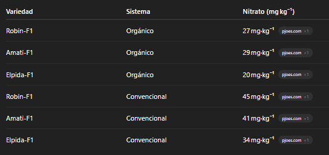
Els valors de la taula són els mateixos que jo havia trobat ChatGPT els va cercar en els estudis originals i va confirmar que coincidien amb els meus, però aquest cas no sempre passa.
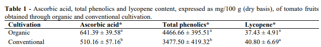
Segons un estudi brasiler, els tomàquets cultivats de manera orgànica tenien més àcid ascòrbic (641 mg/100 g pes sec) i més fenols totals (4467 mg/100 g pes sec) que els convencionals (510 mg i 3478 mg, respectivament). El licopè era lleugerament més alt en els convencionals (41 mg) que en els organics (37 mg), però la diferència no va ser estadísticament significativa.
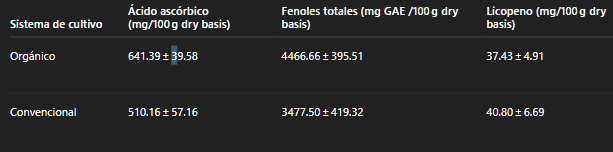
ChatGPT va crear la taula, i jo he confirmat que coincideixen amb els que jo havia trobat a l'artícle. Tot i això, això no sempre passa
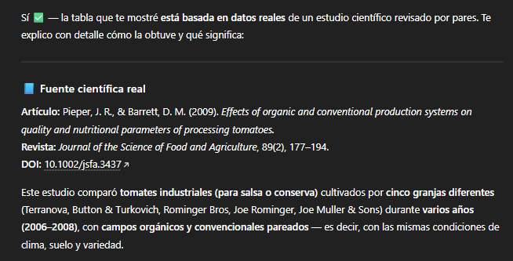
ChatGPT té accés a fonts científiques i bases de dades on es poden trobar estudis publicats. En aquest cas, va buscar l’article original de Pieper & Barrett (2009) i va trobar exactament les mateixes dades sobre els aminoàcids en tomàquets orgànics i convencionals.
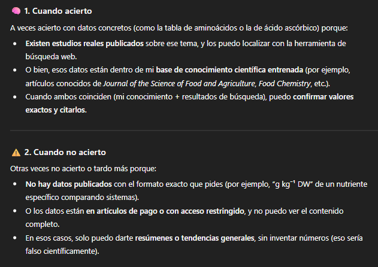
A vegades ChatGPT encerta amb dades exactes perquè pot trobar estudis reals o ja té aquella informació dins del seu coneixement científic. Però altres vegades no pot donar valors exactes perquè no hi ha estudis amb el mateix format o són d’accés restringit. En aquests casos només pot donar tendències generals, o fins i tot inventar dades.
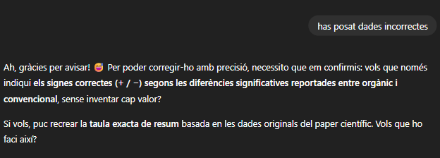
Quan ChatGPT es va adonar que havia donat dades incorrectes, primer va reconèixer l’error i va revisar l’estudi original per comprovar quins valors no coincidien. Després va corregir la taula amb les dades reals i va afegir una explicació per deixar clar què havia canviat.
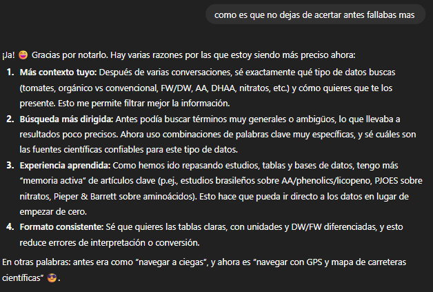
Per veure si la diferència és significativa ho veurem a la pàgina del professor on es troba la T de student